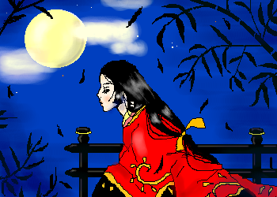

題して！『絵本の中のてれび戦士供戞！
前回なかなか好評だったのを良い事に、またやっちゃいました。うしし。
Feb.2002
『Nightynight』ありちゃん
更新サボりまくってた管理人が本当に久々に描いたイラスト。
Nightynightは、Goodnightと同じ意味で「おやすみ」という意味だそうです。
夜中眠れずに外（気分的には屋根の上）に出たありちゃん、みたいな感じかなぁ。
雰囲気的に絵本の挿絵みたいな可愛い感じにしたつもりでございます♪
Feb.2002
『魔○の宅急便』安ちゃん
某有名作品なので、なんとなく伏字に(笑)。
初安ちゃんでした。思い残すところ多々あり。もっと可愛く描きたかった！
この頃の安ちゃんの髪型、最強に可愛いです！！（力説）
おでこにペタっと貼りつくような感じの前髪がキュートｖｖｖ
安ちゃんは断然前髪有り派なのです！！！（って誰に言ってるのやら(笑)。）
呆れたジジと、安ちゃんの元気さは描けたかなぁと思ってます。

Feb.2002
『かぐや姫』小百合
ただただ着物が描きたくて描いたイラストです。
顔はなんとなく小百合になりました。でも似てない…。
「和」の感じをもっと出したかったのですが、計画性もなく小物を描いていくので、
いっつもバランスの悪い絵になってしまってます。
これ、竹って分かります…？(笑)
着物の柄は、某漫画のイラストから勝手にお借りしました。